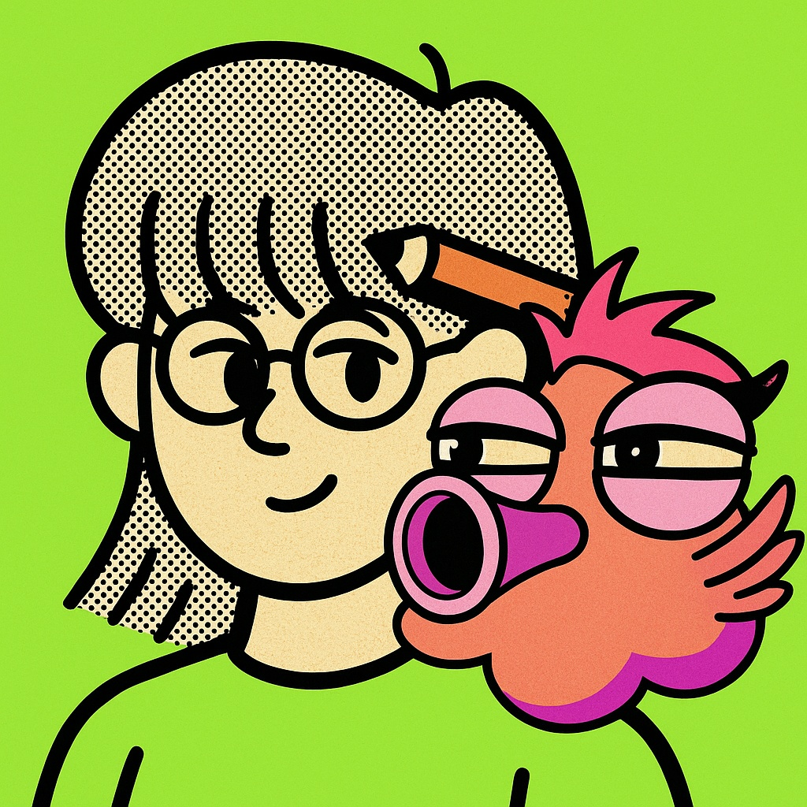

⬅ 撤退至基地1. 桥非常“高”（625米）：从桥面上 ，都要用上整整 11 秒！
2. 地基非常“深”（68米）：相当于把一栋 埋进了地下。
3. 钢铁主梁非常“重”：相当于 95 架 加在一起。
1. 水流像一把巨大的刀一样，把大山给 出了一道道深谷。
(提示：视频 1 分 20 秒左右，感觉很锋利)
2. 桥塔像一棵大树一样，每天以 0.8 米的速度向上 。
(提示：视频 3 分 30 秒左右，感觉有生命力)